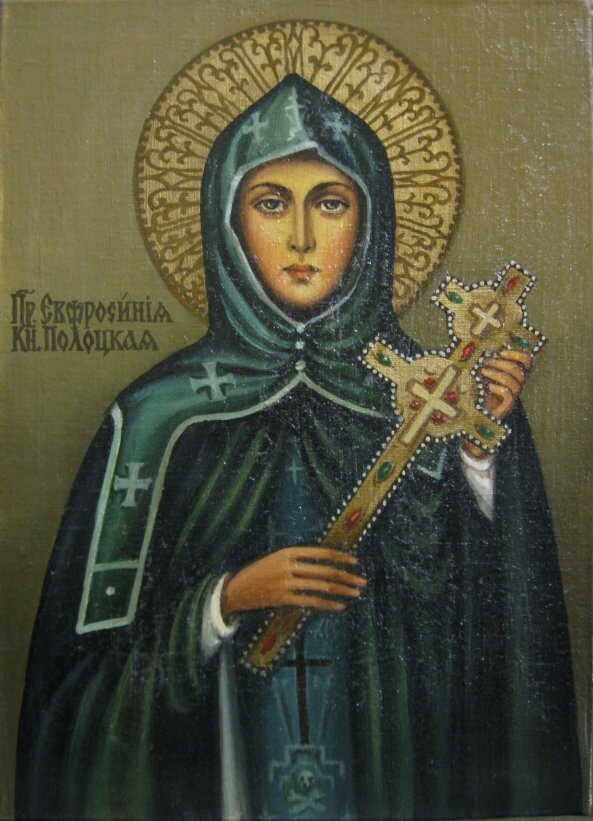
XII векЕвфросиния Полоцкая
Просветительница, святая
Отказалась от княжеского статуса ради служения. Основала монастыри, школы и библиотеки в Полоцке. Заказала создание уникального креста Лазаря Богши.
Год белорусской женщины — дань уважения их особой роли в истории, культуре и жизни страны.
Узнать больше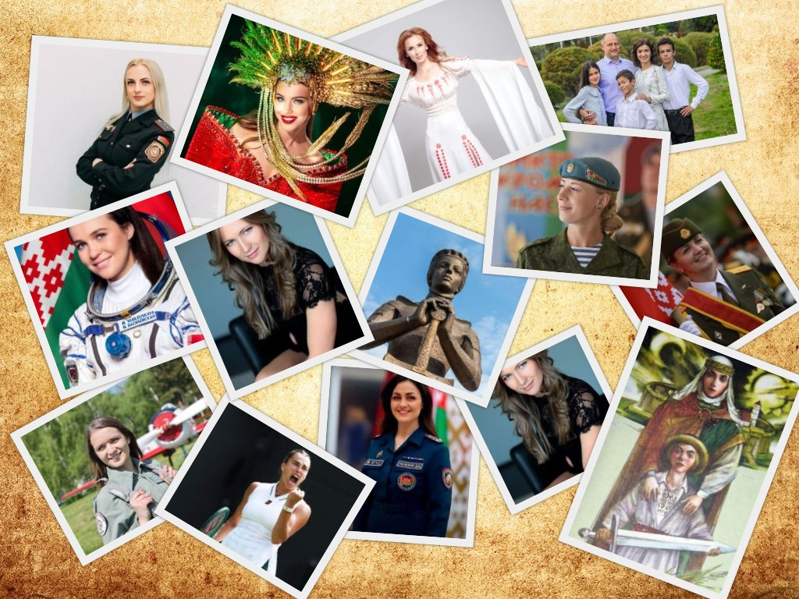
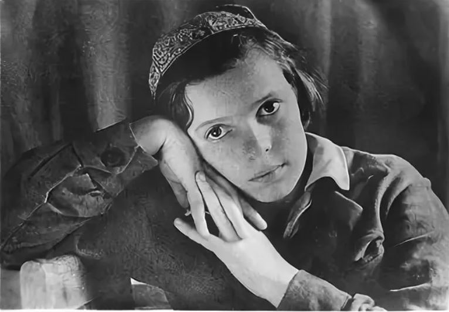
Юная подпольщица (1923–1943)
Печатала листовки со сводками Совинформбюро. Вместе с матерью Ольгой Николаевной помогала подполью. Погибла, не выдав товарищей. Её имя носит пионерская дружина школы №1 г. Могилева и переулок в городе.
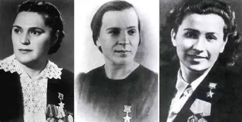
Минские подпольщицы
29 октября 1943 года удостоены звания Героя Советского Союза. Именно они спланировали и осуществили ликвидацию гауляйтера Вильгельма Кубе — палача белорусского народа.
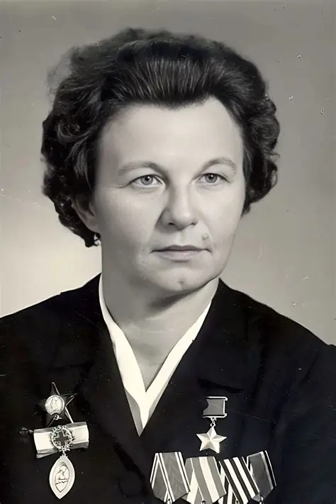
Медсестра, Герой СССР
Вынесла с поля боя 128 раненых. После тяжелейшего ранения лишилась рук и ног, но выжила. Её именем называли танки и самолеты. Награждена медалью Флоренс Найтингейл.
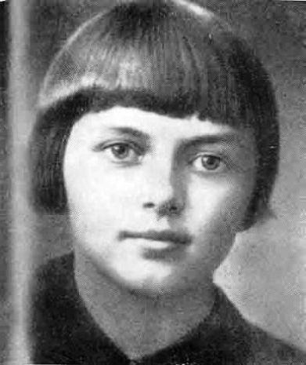
Юная разведчица
Член подпольной организации «Юные мстители». Отравила суп в столовой немецких офицеров (погибло около 100 человек). На допросе застрелила следователя и двух гитлеровцев. Казнена в 1944 году.
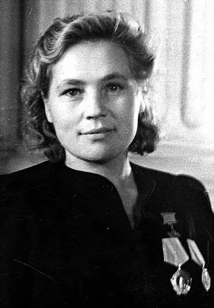
Разведчица, Герой СССР
Подрывала эшелоны, взорвала 270 рельсов, вынесла 23 раненых. После войны стала приемной мамой для 15 сирот.
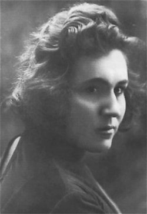
Механик-водитель танка
Продала ценные вещи, чтобы построить танк Т-34 «Боевая подруга» и отправиться на фронт. Герой Советского Союза (посмертно).
По инициативе легендарной лётчицы Марины Расковой были созданы три уникальных женских авиаполка. Немецкие солдаты прозвали наших лётчиц «Ночными ведьмами» за то, что они подлетали к позициям врага ночью на лёгких деревянных самолётах По-2 с выключенными моторами, издавая лишь тихий шорох.
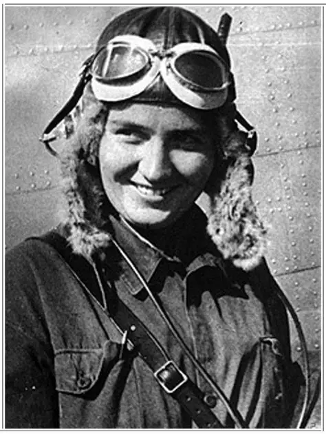
Создательница женских авиаполков
Легенда советской авиации. В 1938 году получила звание Героя Советского Союза за рекордный перелёт из Москвы на Дальний Восток. В 1941 году добилась разрешения сформировать женский авиационный полк. Погибла в 1943 году, возвращаясь из Сталинграда.
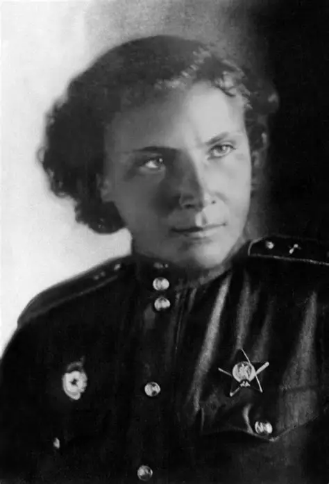
«Белая лилия Сталинграда»
Самая результативная женщина-истребитель в мировой авиации. Лично сбила 12 немецких самолётов и ещё 4 — в группе. На капоте её самолёта была нарисована белая лилия. Погибла в воздушном бою над Миус-фронтом 1 августа 1943 года в возрасте 21 года. Герой Советского Союза (посмертно).
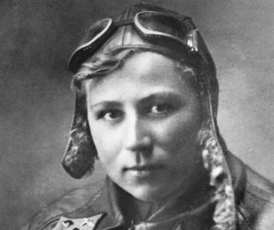
Единственная женщина, совершившая таран
Заместитель командира эскадрильи 135-го бомбардировочного авиаполка. 12 сентября 1941 года у города Ромны её самолёт атаковали семь «мессершмиттов». Она сбила один, а когда закончились патроны — протаранила второй. Погибла. Герой Советского Союза (посмертно).
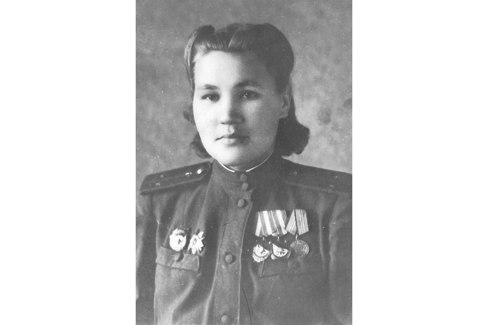
Лётчица, жившая в Могилёве
Совершила 675 боевых вылетов. Воевала в составе 588-го женского ночного бомбардировочного авиаполка (46-й гвардейский Таманский). Награждена орденом Красного Знамени, Отечественной войны, медалями. После войны работала лётчиком-инструктором в Могилёвском аэроклубе.
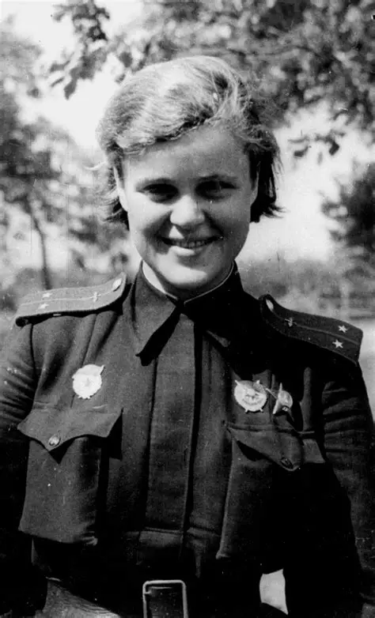
Прошла путь от штурмана экипажа до штурмана всего полка
Евгения Максимовна Руднева — советская лётчица, штурман знаменитого женского 46-го гвардейского ночного бомбардировочного авиаполка, Герой Советского Союза (посмертно). До войны она была студенткой МГУ, подающей надежды астрономом, но ушла на фронт добровольцем и погибла в 23 года, выполняя боевое задание.
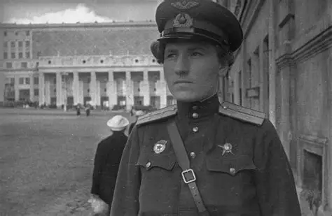
Имеет почётный титул "воздушного аса"
Екатерина Васильевна Буданова (1916–1943) — легендарная советская лётчица-истребитель, одна из двух женщин в мире, завоевавших почётный титул «воздушного аса». За свою короткую, но яркую жизнь она прошла путь от простой деревенской девушки до грозы немецких пилотов, одержав 11 воздушных побед.
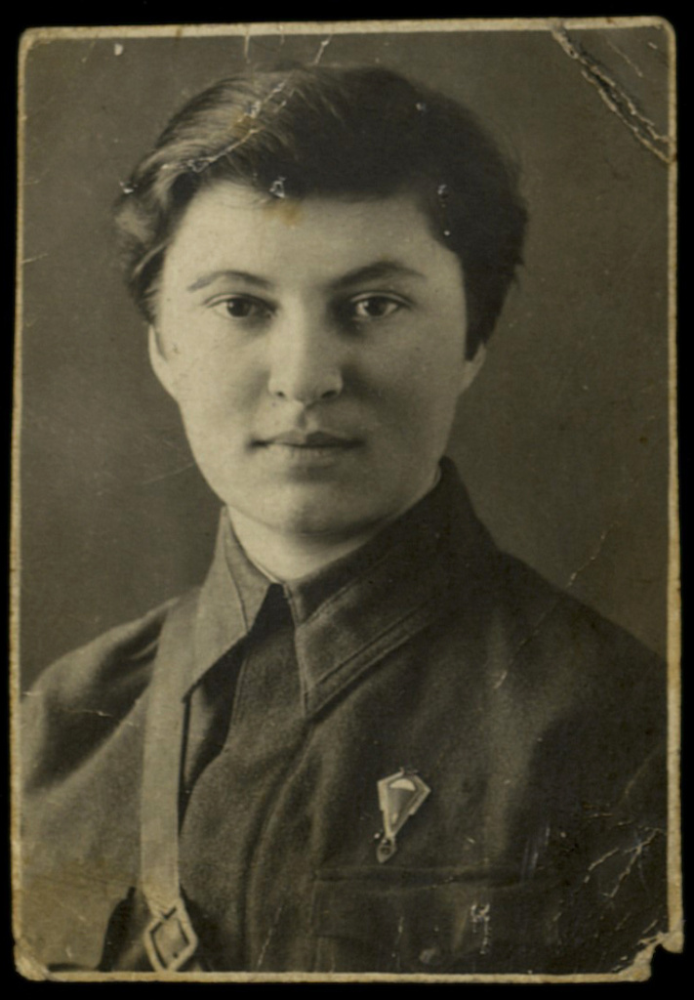
«Ночная ведьма» из Гомеля
Докутович Галина Ивановна (1921, Гомель – 1943) – младший лейтенант, штурман самолета 46 гвардейского Таманского ночного лёгкобомбардировочного авиаполка. В 1941 г. добровольцем ушла на фронт. На её счету 136 боевых вылетов. Летом 1942 г. получила тяжёлое повреждение позвоночника, после лечения вернулась в полк. Погибла при выполнении боевого задания над станицей Крымская (ныне г. Крымск) Краснодарского края
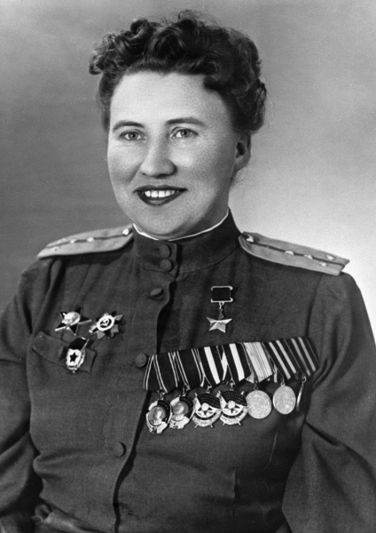
Прошла путь от рядового пилота до гвардии капитана, штурмана полка и командира звена
Лариса Николаевна Розанова (в замужестве — Литвинова) — советская лётчица, участница Великой Отечественной войны, штурман и командир звена знаменитого 46-го гвардейского ночного бомбардировочного авиационного полка («Ночные ведьмы»). За образцовое выполнение боевых заданий и проявленные мужество и героизм ей было присвоено звание Героя Советского Союза.
На оккупированной территории БССР женщины составляли костяк подполья. Они собирали разведданные, распространяли листовки, совершали диверсии и помогали партизанам.
«Короткая, но яркая жизнь Тани Карпинской, все её силы "были отданы самому прекрасному в мире — борьбе за освобождение человечества"».
— Из материалов пионерской дружины имени Татьяны КарпинскойЛиквидация гауляйтера Кубе
Минские подпольщицы, уничтожившие палача белорусского народа — генерального комиссара Вильгельма Кубе. 22 сентября 1943 года Елена Мазаник подложила мину под матрас кровати гауляйтера. Операцию спланировала Мария Осипова, связь с партизанами обеспечивала Надежда Троян. Все три — Герои Советского Союза.
Юная героиня «Юных мстителей»
Разведчица партизанского отряда. Работая в столовой немецких офицеров, отравила суп — погибло около 100 нацистов. При попытке уйти к партизанам была схвачена. На допросе в гестапо застрелила следователя и ещё двоих гитлеровцев. После жестоких пыток расстреляна в январе 1944 года. Герой Советского Союза (посмертно).
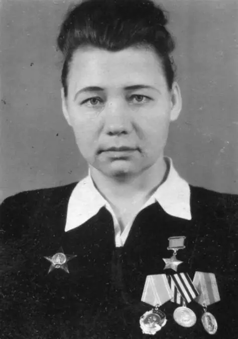
Руководитель «Юных мстителей»
Возглавляла Обольскую подпольную комсомольскую организацию «Юные мстители». Группа совершила 21 диверсию: взорвала электростанцию, вывела из строя кирпичный и льняной заводы, сожгла 2000 тонн льна. После массовых арестов ушла в партизаны. Герой Советского Союза. После войны работала в военкомате Витебска.
Подпольщица из Могилёва
Вместе с матерью Ольгой Николаевной помогала подпольной организации «Комитет содействия Красной Армии». Ночью печатала листовки со сводками Совинформбюро. Работала диктором на радиоузле, собирала ценные сведения. Погибла в 1943 году, не выдав товарищей. Её имя носит пионерская дружина школы №1 г. Могилёва и переулок в городе.
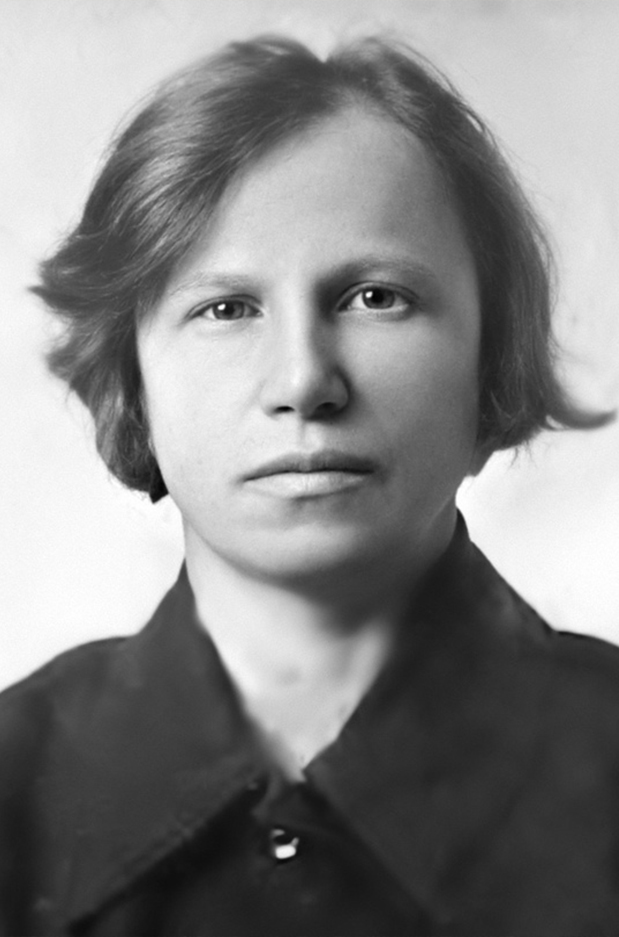
Легендарная подпольщица
Сражалась в Гражданскую войну, была в подполье Западной Беларуси. Во время Великой Отечественной войны, будучи беременной, вступила в партизанский отряд. В 1942 году вернулась в подполье, была схвачена и казнена. Герой Советского Союза (посмертно).
Разведчица, Герой СССР
Подрывала эшелоны, взорвала 270 рельсов, вынесла 23 раненых. После войны стала приёмной мамой для 15 сирот. Герой Советского Союза.
От просветительницы XII века до космонавта XXI века — путь белорусской женщины сквозь столетия.

XII векПросветительница, святая
Отказалась от княжеского статуса ради служения. Основала монастыри, школы и библиотеки в Полоцке. Заказала создание уникального креста Лазаря Богши.
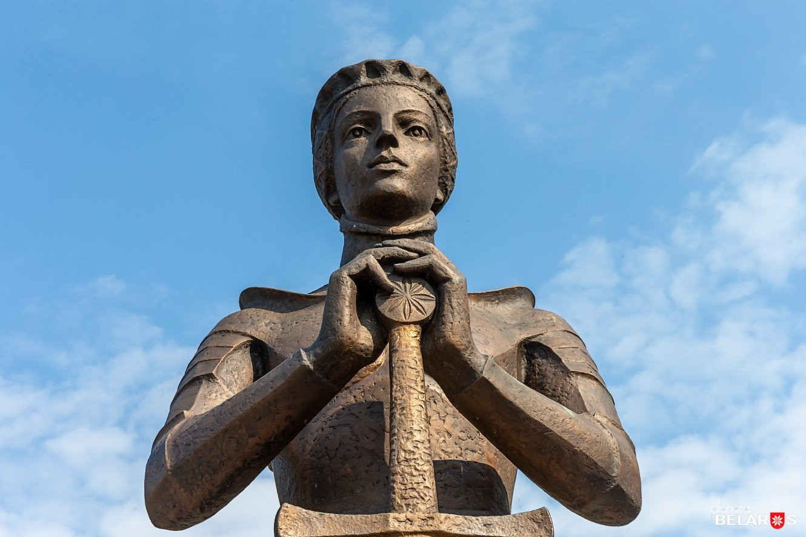
XV–XVI вв.Княгиня, защитница города
Возглавила войско против татар, облачившись в доспехи. При ней Слуцк ни разу не был захвачен врагами. Превратила город в неприступную крепость.
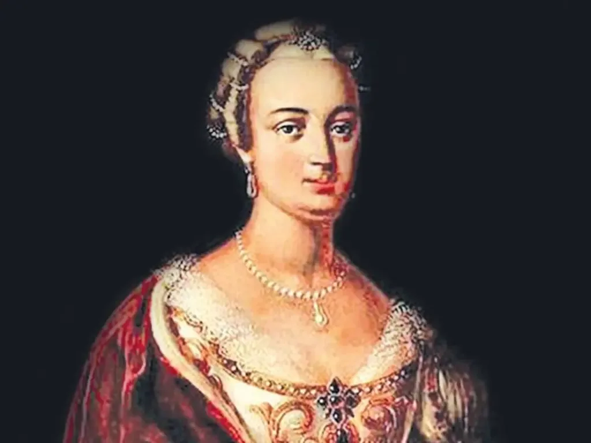
XVIII векПервая женщина-писательница Беларуси
Создала первый классический театр в Несвиже. Восстановила замок, пополнила библиотеку до 9000 томов. Превратила Несвиж в культурный центр Речи Посполитой.
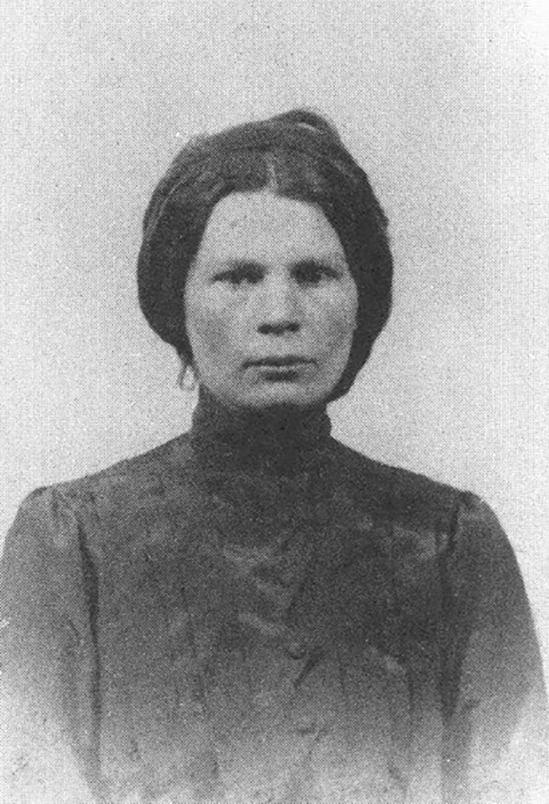
Начало XX векаПоэтесса, общественная деятельница
Защищала права крестьянок и работниц. Училась в двух университетах. Работала сестрой милосердия в Первую мировую войну.
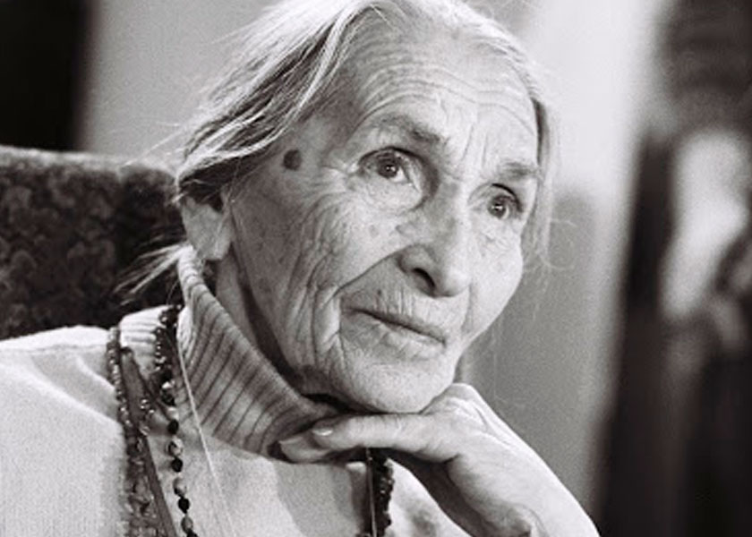
XX векЛегенда Купаловского театра
Сыграла около 200 ролей. Работала на сцене до 95 лет. Широко известна по ролям бабушек в кино («Люди на болоте», «Прощание»).
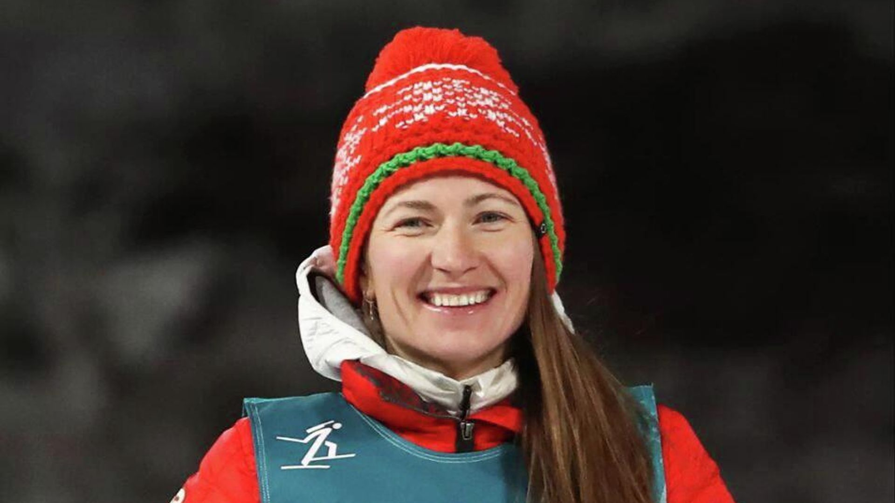
2014–2018Четырёхкратная олимпийская чемпионка
Первая в истории женщина, удостоенная звания «Герой Беларуси». Выиграла три золота на Олимпиаде в Сочи и ещё одно — в Пхенчхане.
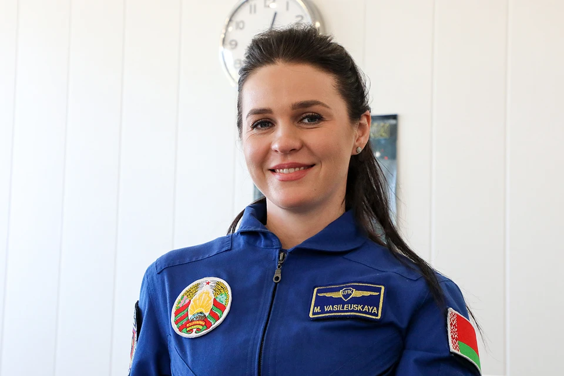
2024Первая белорусская женщина-космонавт
Совершила полёт на МКС в составе международного экипажа. Герой Беларуси. Её имя стало символом новых возможностей для белорусских женщин.
«Настало время отдать должное их особой роли в нашей жизни и объявить 2026 год Годом белорусской женщины».